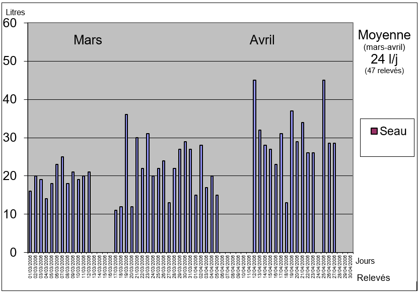
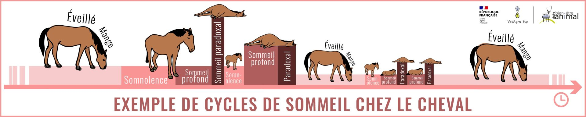

Les besoins des chevaux
Nous allons aborder des six besoins vitaux des chevaux, indispensables à leur survie.
Le non-respect de ces besoins essentiels peut mettre leur vie en danger.
Il est crucial de rappeler constamment ces points fondamentaux : Respirer, Boire, Manger, Dormir, Bouger, et Communiquer.
Respirer
C'est évidemment le besoin vital le plus essentiel : sans respiration, il n'y a pas de vie, et le corps cesse de fonctionner très rapidement.
En dehors des cas d'asphyxie aiguë, toute atteinte de la fonction respiratoire réduit le potentiel du cheval, même à petite échelle.
Les chevaux sont particulièrement vulnérables sur le plan respiratoire, ce qui constitue le principal facteur limitant leurs performances sportives, avant même les problèmes orthopédiques.
Il est crucial de reconnaître que les chevaux passent souvent jusqu'à 23 heures sur 24 confinés dans des boxes, souvent mal ventilés et exposés aux poussières...
Il est donc essentiel de veiller à leur bien-être respiratoire afin de préserver leur pleine capacité respiratoire :
- Assurer une bonne ventilation des boxes (vérifiable avec la fumée d'une cigarette, qui doit monter vers le plafond et être rapidement éliminée, sans stagner) ;
- Permettre aux chevaux de mettre la tête à l'extérieur du box ;
- Éviter de secouer la paille pour faire la litière en présence des chevaux ;
- Entretenir soigneusement les litières pour éviter les vapeurs d'ammoniac dues à l'urine ;
- Sortir les chevaux le plus souvent possible (pré, paddocks, exercice, etc.) ;
- Assurer une bonne vaccination et adopter des mesures raisonnées pour éviter la contagion des principales maladies respiratoires : grippe, rhinopneumonie, gourme, etc.
Boire
Le deuxième besoin vital des chevaux est de boire, sans quoi leur vie peut également prendre fin rapidement.
Contrairement à une idée répandue selon laquelle un cheval boit systématiquement 40 litres d'eau par jour, une étude menée sur une année auprès d'une vingtaine de chevaux a révélé des variations considérables dans leur consommation quotidienne.
Ces variations dépendent notamment des conditions météorologiques, qui sont le principal facteur influençant la consommation d'eau.
Par exemple, les relevés montrent qu'un cheval peut passer d'une consommation de 12 litres par jour à 38 litres par jour du jour au lendemain, et dépasser rarement les 40 litres quotidiens.
En pratique :
- Vérifier matin est soir que les abreuvoirs automatiques fonctionnent bien si c’est ce système d’abreuvement qui est en place ;
- Remplir les seaux très régulièrement si l’abreuvement est au seau ;
- Vérifier que les points d’eau ne sont pas gelés au pré ;
- Savoir néanmoins que les chevaux peuvent être privés d’eau facilement une demi journée, à condition d’être bien nourris en foin, car le caecum (une des partie du gros intestin) leur sert de réserve, c’est un peu leur « bosse de chameau ».
- Etre très vigilant sur l’hygiène de l’eau, et en particulier le risque de contamination par l’urine de rongeur, qui transmet une des grandes maladies des chevaux : la Leptospirose.
- Savoir que les chevaux sont très sensibles au goût de l’eau, il leur arrive même de rechigner à boire lorsqu’on leur change leur eau habituelle.
Manger
Le troisième besoin vital des chevaux est la nutrition. Sans une alimentation adéquate, leur corps s'épuise et leur pronostic vital est compromis.
Leur régime alimentaire de base se compose principalement d'herbe, sous forme fraîche dans les pâturages ou séchée en foin. Le foin doit être disponible en quantité illimitée, avec un minimum recommandé d'environ 8 kg par jour pour éviter des problèmes digestifs tels que les coliques.
Cependant, pour les chevaux plus actifs, des aliments concentrés contenant des céréales et des huiles sont nécessaires pour répondre à leurs besoins énergétiques.
Voir plus sur l'alimentation
Dormir
Le quatrième besoin vital des chevaux est le sommeil, mais il diffère de celui des humains.
Contrairement à une idée répandue, les chevaux ne dorment pas debout. Ils somnolent lorsqu'ils sont debout, mais un sommeil profond survient lorsqu'ils sont couchés, soit sur le ventre (en position "vache"), soit sur le côté (appelé "décubitus latéral" en termes scientifiques).
Ces périodes de sommeil profond sont courtes, d'environ 10 à 15 minutes, et se répartissent tout au long de la journée ou de la nuit, totalisant environ deux à trois heures par jour.
Cette méthode de "sommeil fractionné" permet aux chevaux d'échapper aux prédateurs. Dans la nature, d'autres chevaux assurent la surveillance en faisant des rotations.
En pratique :
- Eviter de déranger un cheval couché, le laisser tranquille 10 minutes pour qu’il puisse prendre son temps de sommeil, revenir plus tard ;
- Noter lorsqu’un cheval est couché, car si 10 à 15 minutes sont normales, plus c’est anormal et il faut aller voir ce qui se passe (maladie, coliques, …) ;
- Eviter les appareils radio à fond dans les écuries, les chevaux sont sensibles au bruit et cela les empêche de dormir ;
- Un cheval stressé (par exemple lors d’une compétition) ne se couche pas, et donc ne dort pas, c’est une information importante pour évaluer le niveau de stress ;
- Lors de transports longs, durant lesquels les chevaux ne peuvent pas se coucher, il faut prévoir de la fatigue à l’arrivée et un temps de récupération.
Bouger
Un autre besoin vital pour les chevaux est de bouger, se mouvoir et se déplacer.
Dans leur environnement naturel, les chevaux passent au moins 8 heures par jour à se déplacer, que ce soit pour chercher de la nourriture ou pour éviter leurs prédateurs naturels.
Le mouvement est essentiel pour maintenir le bon fonctionnement de leur corps, notamment pour stimuler les appareils respiratoire et digestif.
En pratique :
- Eviter les 23 heures sur 24, statique au box, et avoir toujours en tête que « le pire ennemi du cheval c’est le box » ;
- Tous les prétextes sont bons pour faire bouger un cheval : exercice, marcheur, tapis roulant, balade, …
- Savoir que les chevaux bougent peu au pré, aussi pour un cheval sportif il faut des mouvements qui sollicitent plus le corps.
Malgré tout, il est remarquable de constater que les chevaux peuvent tolérer des périodes d'immobilité exceptionnellement longues sans nécessairement développer de problèmes de santé.
Par exemple, certains chevaux en convalescence après une chirurgie de fracture peuvent rester immobiles pendant des périodes prolongées. Cependant, ces cas sont exceptionnels et les chevaux concernés bénéficient généralement d'un suivi médical intensif et de soins attentifs, ce qui compense leur manque d'activité physique.
Communiquer
Dernier besoin vital, mais à connaître : laisser un cheval seul, sans congénères, sans compagnie, peut engager son pronostic vital : dépérissement, stress chronique et toutes ses conséquences néfastes, coliques notamment…
Le cheval est un animal grégaire (= animal de groupe), il vit en harde dans la nature, c’est tout sauf un animal solitaire, il cherche les autres, les appelle, les touche, les voit, les sent, tous ses sens sont en éveil, et la solitude est anormale pour lui, c’est une source d’angoisse.
Etre avec les autres, c’est communiquer, avec tous ses sens, les postures, les mouvements d’oreilles, les odeurs, les hennissements. Il faut permettre cela et éviter à tout prix l’isolement total d’un individu, sans quoi les problèmes de santé, liés au mal-être, vont vite arriver, et peuvent avoir une fin catastrophique, tant les chevaux sont sensibles au stress.
En pratique :
- Pas de cheval seul au pré ;
- Mettre un nombre pair de chevaux ensemble, ils s’apparient souvent pour se gratter, chasser les mouches de l’autre avec leurs queues ;
- Sevrer les poulains par paires ;
- Faire en sorte dans une écurie que les chevaux puissent se voir, sentir leurs odeurs, entendre leurs hennissements ;
- Si impossible d’avoir un autre cheval, tacher de trouver un animal compagnon, on voit de tout : lapin, poney, chèvre, mouton…
- Si cheval seul par obligation, compenser par la relation à l’humain : passer du temps avec lui, brosser, pansage long, nombreuses balades… mais sans jamais le laisser croire que vous êtes un congénère, ce serait dangereux.